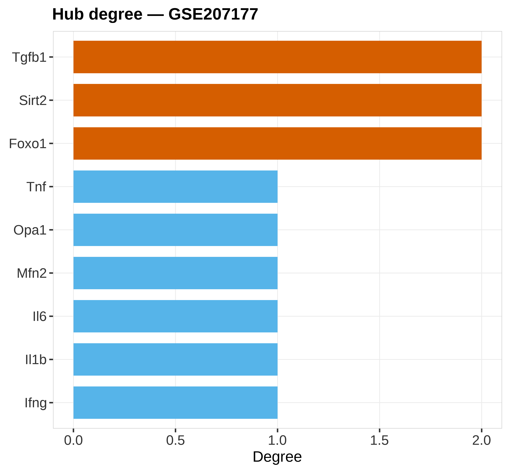
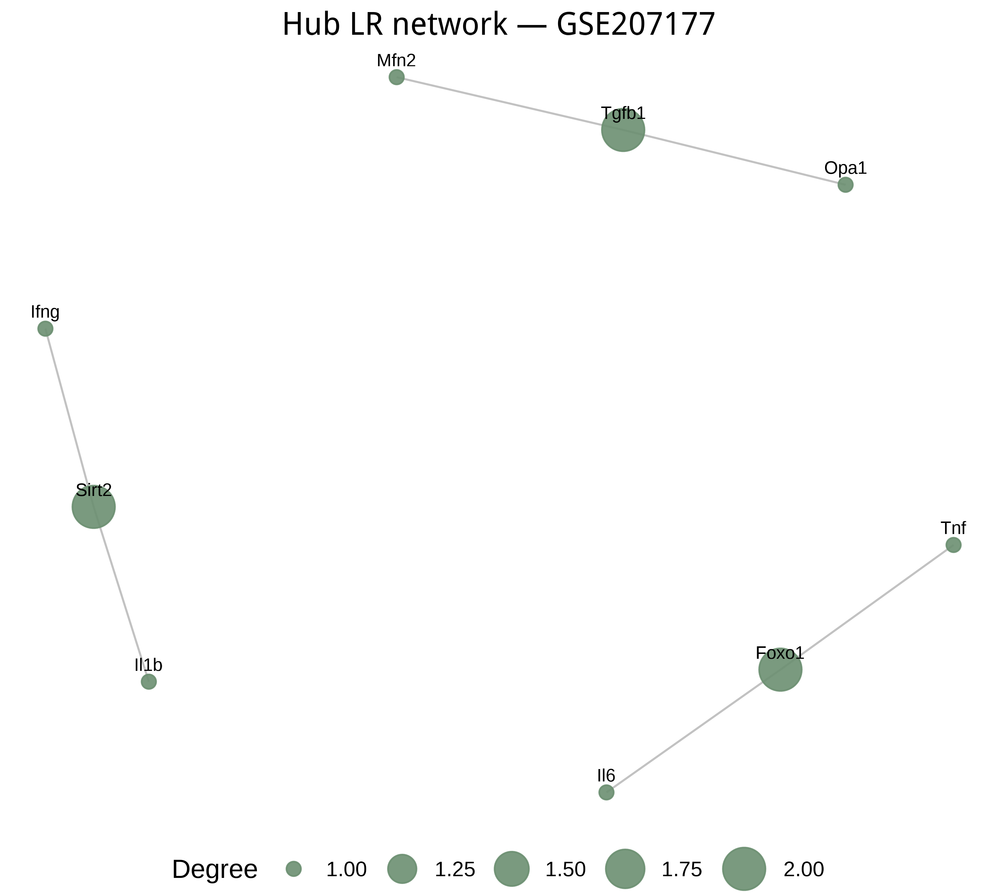

状态：PASS
sourced: 运行骨架_runSkeleton.R
data_provenance: REAL — GSE207177 real_GSE207177_Hub_LR_network.csv。
"skill","stage","n_rows","n_cols","n_samples","group_source","toy","data_provenance","accession","sourced_skill_scripts","notes","checked_at" "PPI-Network","post",9,2,6,"GSE207177 hub ligand-target network",FALSE,"REAL","GSE207177","sourced: 运行骨架_runSkeleton.R","hub degree + network; data_provenance=REAL","2026-07-19 20:48:00"


REAL GSE207177 Hub 配体–靶标网络（书清嵌入）。data_provenance=REAL。
生成时间：2026-07-19 20:48:01 · 报告规范：统一交付规范_DeliveryStandards · 版本 v1